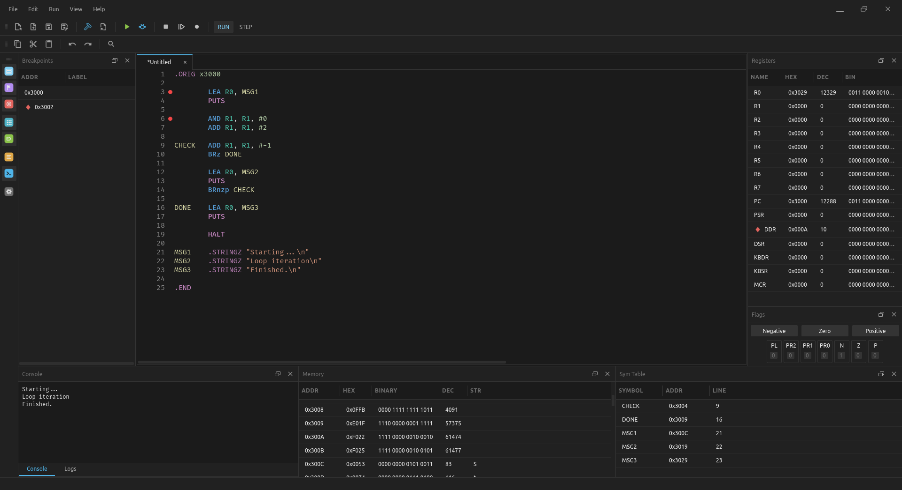

Editor
Tabbed editing of multiple assembly files, with LC-3 syntax highlighting.
Build · Debug · Learn
A desktop development environment for the LC-3 architecture. It combines a source editor, an assembler, a virtual machine and a debugger in a single application.

The LC3kit IDE main window: editor, breakpoints, registers and flags, memory and symbol table below.
LC3kit is a library that provides an LC-3 virtual machine and a two-pass assembler producing standard
.obj files. The VM exposes a hook-based debugger interface and supports an optional
instruction set extension, LC3kit-ext. LC3kit IDE is the graphical front end built on this library.
LC3kit IDE is developed by a student for students who are learning computer architecture and assembly programming. The aim is a tool that is simple to install and use, and that shows the state of the machine at every step of a program.
The project is open source and contributions are accepted through GitHub.
The LC-3 (Little Computer 3) is an instruction set architecture designed for teaching. It was introduced with the textbook Introduction to Computing Systems by Yale N. Patt and Sanjay J. Patel and is used in introductory computer organization courses, for example:
LC3kit IDE is an independent project and is not affiliated with these institutions.
Tabbed editing of multiple assembly files, with LC-3 syntax highlighting.
Assembles LC-3 source into standard object files from within the IDE.
Runs assembled programs in the LC-3 virtual machine, with a console for input and output.
Breakpoints, single stepping and resuming execution, with the machine state visible throughout.
Dockable panels for registers, flags, memory, symbols, breakpoints, console and logs.
Example programs for common LC-3 exercises, and two colour themes, charcoal and daisy.
Each panel can be docked, floated or closed independently.
Prebuilt packages are published on the GitHub releases page. The project can also be built from source.
Checking GitHub for the latest release...
Commands for Debian and Ubuntu